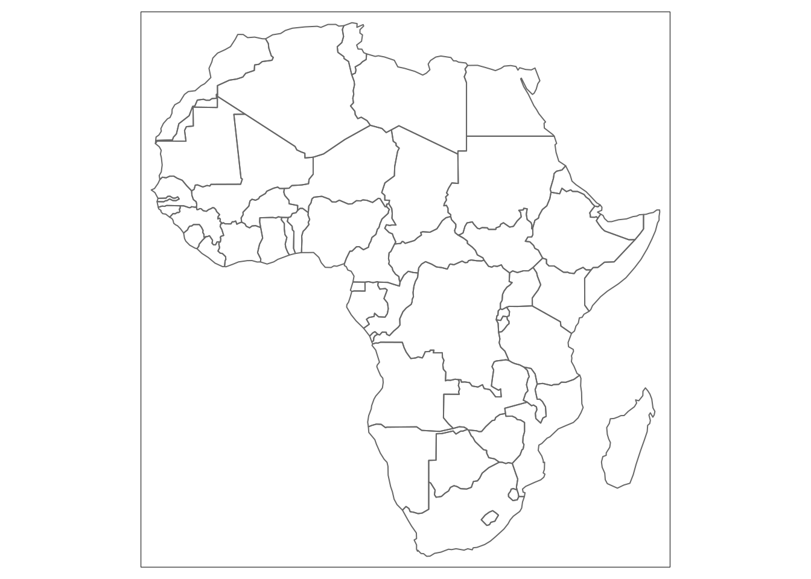
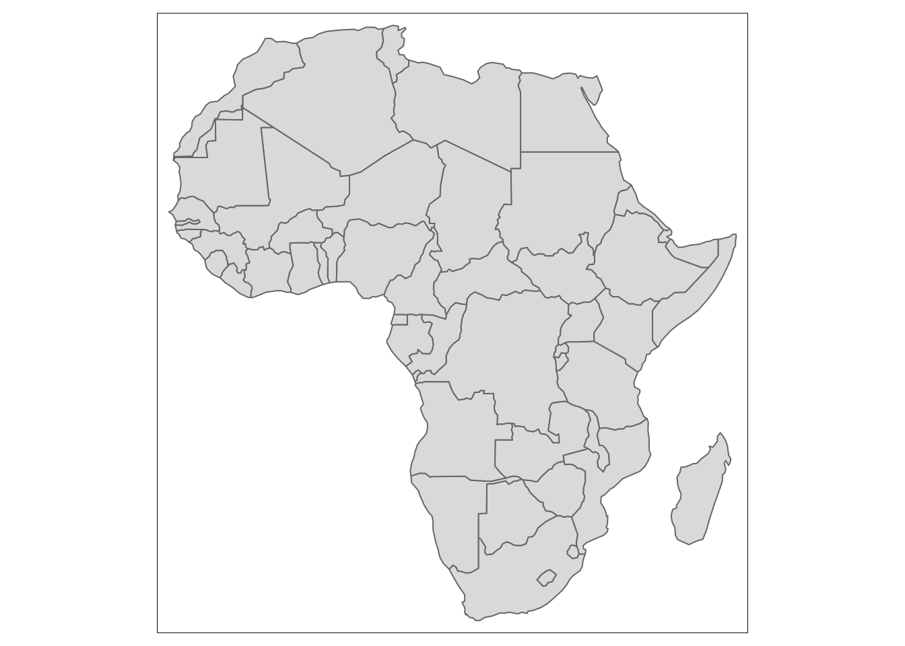
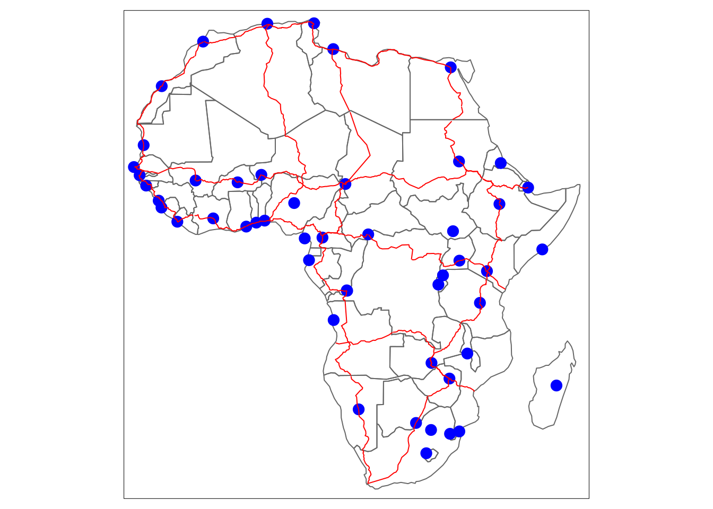

Chapter 5 Example
## Geometry set for 51 features
## geometry type: MULTIPOLYGON
## dimension: XY
## bbox: xmin: -17.62504 ymin: -34.81917 xmax: 51.13387 ymax: 37.34999
## geographic CRS: WGS 84
## First 5 geometries:The country border file contains 51 country outlines with geometry type MULTIPOLYGON.
If we print the first 6 rows of data, we can see how each country border is stored in the database
## Simple feature collection with 6 features and 11 fields
## geometry type: MULTIPOLYGON
## dimension: XY
## bbox: xmin: -17.06342 ymin: -13.25723 xmax: 51.13387 ymax: 27.65643
## geographic CRS: WGS 84
## name name_long pop_est gdp_md_est
## 1 Tanzania Tanzania 53950935 150600.0
## 2 W. Sahara Western Sahara 603253 906.5
## 11 Dem. Rep. Congo Democratic Republic of the Congo 83301151 66010.0
## 12 Somalia Somalia 7531386 4719.0
## 13 Kenya Kenya 47615739 152700.0
## 14 Sudan Sudan 37345935 176300.0
## lastcensus income_grp iso_a3 geometry
## 1 2002 5. Low income TZA MULTIPOLYGON (((33.90371 -0...
## 2 NA 5. Low income ESH MULTIPOLYGON (((-8.66559 27...
## 11 1984 5. Low income COD MULTIPOLYGON (((29.34 -4.49...
## 12 1987 5. Low income SOM MULTIPOLYGON (((41.58513 -1...
## 13 2009 5. Low income KEN MULTIPOLYGON (((39.20222 -4...
## 14 2008 4. Lower middle income SDN MULTIPOLYGON (((24.56737 8....
## name_fr name_pt name_af
## 1 Tanzanie Tanzânia Tanzanië
## 2 Sahara occidental Saara Ocidental Wes-Sahara
## 11 Congo-Kinshasa Congo - Kinshasa Demokratiese Republiek van die Kongo
## 12 Somalie Somália Somalië
## 13 Kenya Quênia Kenia
## 14 Soudan Sudão Soedan
## name_sw
## 1 Tanzania
## 2 Sahara Magharibi
## 11 Jamhuri ya Kidemokrasia ya Kongo
## 12 Somalia
## 13 Kenya
## 14 SudanGeometry data contains a list within multiple polygons that are represented as data points with latitude and longitude. These points are connected to form multiple polygons which are either used to include or exclude areas from the final image. The geometry of the multipolygon data is stored as MULTIPOLYGON (((Latitude1, Longitude1, Latitude2, Longitude2, Latitude3, Longitude3,.. ),(Latitude1, Longitude1, ..)),(Latitude1, Longitude1, …))). This needs further clarification.
Lets visualise these multipolygons in black


Now we can add the capitals and highways from previous episodes
tm_shape(africountries) +
tm_borders()+
tm_shape(africapitals) +
tm_dots("blue", size=0.5)+
tm_shape(afrihighway) +
tm_lines("red") # displaying the point geometry as red dots
5.0.1 Exercise 1
Multiple choice to identify if datafiles contain point, line or multipolygon geometry -need to identify two different datafiles to use. –> list of data : the students need to identify what kind of geometry type the data file contains –> Visual example: the students need to identify what kind of geometry type the data file contains that is visualised in the example.
a Point data b Line data c Multipolygon data d All of the above
If wrong: go back (explain why wrong)
5.0.2 Exercise 2 (different data: game reserves)
Visualise the Malawi country border in black and district borders in green.
5.1 Episode 4: Raster
5.1 Learning objectives
- Explain the difference between vector and raster data
- Identify raster data files
- Open raster data files
- Visualise raster data files
Episode 1 to 3 are focussed on vector data. Vector data uses points, lines, polygons to model the real world.
I extracted the text below. Needs to be re-written.
Raster data is a matrix of grid cells. Each cell represents a geographical location and contains a value that represents a characteristict of that region [ref]. Represents large areas with continuously changing values.
–> image of a simple raster: with data
Raster data is used when displaying information that is continuous across an area and cannot easily be divided into vector features(vectors aren’t very good at representing features that are not homogeneous). examples: population density, landcover variation, elevation.
Rasters are often backdrop for vector data.
Raster data is extracted from eg. satellite imagery, drone imagery, surveys,
Depending on the number of grid cells, this can result in a smooth image, or visualisation of individual grid cells. Raster datasets can become potentially very large because they record values for each cell in an image. As resolution increases, the size of the cell decreases. But this comes at a cost for speed of processing and data storage.
To read in raster data, we need to install and load the ‘raster’ package.
5.2 Example
To show raster data, in this example we use population data from 2000 and 2020.
The population raster data from 2000 contains 434 rows, 413 columns and a total of 179242 grid cells with geometry type RasterLayer .
If we print the first 6 rows of data, we can see how each country border is stored in the database
Why do you think the first 6 data points are empty?
Better to see a few more grid cells in the raster layer.
The raster layer consists of a matrix with values. The grid cells can be empty if no data is available.
Lets visualise the population data with the country borders (example from afrilearnr.
#tm_shape(afripop2020) +
# tm_raster(palette = rev(viridisLite::magma(5)), breaks=c(0,2,20,200,2000,25000)) +
#tm_shape(africountries) +
# tm_borders() Please note that population density data are highly skewed. To ensure both high and low density areas are clearly visible, we have to specify the data breaks manually.
Now we can add the capitals and highways from previous episodes
#tm_shape(afripop2020) +
# tm_raster(palette = rev(viridisLite::magma(5)), breaks=c(0,2,20,200,2000,25000)) +
#tm_shape(africountries) +
# tm_borders("white", lwd = .5) +
#tm_shape(afrihighway) +
# tm_lines(col = "red") +
#tm_shape(africapitals) +
# tm_symbols(col = "blue", alpha=0.4, scale = .6 )+
#tm_legend(show = FALSE)5.2.1 Exercise 1
5.2.2 Exercise 2 (different data: elevation data?)
5.3 Summary/key points
- Points are ..
- Lines are ..
- Polygons are ..
- Rasters are ..
5.4 Final Exercises (to be done)
5.4.1 1 Visualise
5.4.2 2 User story
5.5 Further resources
If you are interested in learning more about the different spatial data types, please visit:
5.6 Feedback
- Request on what was useful to the reader (learner) and what can be improved